Operații cu polinoame
Având două polinome ![f,g\in \mathbb{C}[X],\ f=a_nX^n+a_{n-1}X^{n-1}+\dotsc+a_1X+a_0](../media/webbooks/338/2153/images/equations/o3k9slhf4eoxdmerurso6g==.gif) și și scalarul , putem efectua mai multe operații algebrice între obiectele matematice introduse.
și și scalarul , putem efectua mai multe operații algebrice între obiectele matematice introduse.
În ceea ce urmează, vom trata următoarele operații algebrice cu polinoame:
adunarea polinoamelor; înmulțirea polinoamelor; împărțirea polinoamelor;
schema lui Horner; teorema împărțirii cu rest; teorema restului (Bézout);
divizibilitatea polinoamelor.
Pe lângă operațiile enumerate mai sus, în această secțiune vei afla cum se află rădăcinile unui polinom și ce sunt ecuațiile algebrice.
Așa cum a fost menționat și mai sus, la subcapitolul "împărțirea polinoamelor" vei găsi acele teoreme importante pentru împărțirea polinoamelor, respectiv algoritmul de împărțire a celor două polinoame și o altă metodă de a afla câtul și restul împărțirii polinomului  la polinomul numită schema lui Horner.
la polinomul numită schema lui Horner.
Totodată, schema lui Horner ne ajută să aflăm și rădăcinile unui polinom. Acest lucru îl vei putea vedea în exemplele ilustrative, accesând această secțiune a ghidului nostru.
Adunarea polinoamelor
Pe mulțimea polinoamelor se definește următoarea operație algebrică:
Definiția P13: Adunarea polinoamelor
Fie și două polinoame.
Suma polinoamelor și  este polinomul notat unde:
este polinomul notat unde:
.
Spunem că adunarea polinoamelor se face pe componente.
Operația prin care oricărui cuplu de polinoame îi asociem polinomul se numește adunarea polinoamelor.
Așadar, putem defini următoarea funcție:
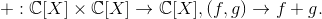
Din proprietățiile adunării numerelor complexe, ne rezultă următoarele proprietăți:
Propoziția P14: Proprietățile adunării polinoamelor
Comutativitatea adunării
Adunarea polinoamelor este comutativă, adică oricare ar fi
Asociativitatea adunării
Adunarea polinoamelor este asociativă, adică oricare ar fi
Existența elementului neutru pentru adunare
Adunarea polinoamelor admite polinomul nul ca element neutru, adică 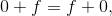 oricare ar fi
Orice polinom are un opus
Pentru orice polinom ![f\in \mathbb{C}[X],](../media/webbooks/338/2153/images/equations/g7dwaf2zyzgq7y-tucr-5a==.gif) de forma există un unic polinom de forma numit polinomul opus polinomului
de forma există un unic polinom de forma numit polinomul opus polinomului  astfel încât .
astfel încât .
Folosindu-ne de proprietatea anterioră, putem defini scăderea polinoamelor astfel: oricare ar fi
Exemplu:
Fie polinoamele și 
Calculați comparați rezultatele.
Calculați comparați rezultatele.
Verificați dacă polinomul nul este element neutru pentru polinomul
Aflați opusul polinomului
Calculați
Rezolvare:
Pentru a rezolva aceste exercițiu, vom folosi Proprietatea P14: (Proprietățile adunării polinoamelor).
Calculăm .
.
Din Propoziția P14,1., avem că adunarea este comutativă.
Calculăm
Din Propoziția P14,2., avem că adunarea este asociativă.
Verificăm dacă polinomul nul este element neutru pentru polinomul
Adică trebuie verificată relația
Calculăm
Din Propoziția P14,3., avem că adunarea admite polinomul nul ca element neutru.
Aflăm opusul polinomului
Polinomul opus polinomului este de forma adică:
Verificăm relația
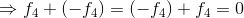
Din Propoziția P14,4., avem că polinomul opus lui este polinomul
Calculăm

Înmulțirea polinoamelor
Pe mulțimea polinoamelor definim următoarea operație algebrică:
Definiția P15: Înmulțirea polinoamelor
Fie și două polinoame.
Produsul polinoamelor și este polinomul notat unde cu

Operația prin care asociem fiecărui cuplu de polinoame polinomul se numește înmulțirea (produsul) polinoamelor.
Așadar, putem defini următoarea funcție:
Din proprietățiile înmulțirii numerelor complexe, ne rezultă următoarele proprietăți:
Propoziția P16: Proprietățile înmulțirii polinoamelor
Comutativitatea înmulțirii
Înmulțirea polinoamelor este comutativă, adică oricare ar fi
Asociativitatea înmulțirii
Înmulțirea polinoamelor este asociativă, adică oricare ar fi
Existența elementului neutru pentru înmulțire
Înmulțirea polinoamelor admite polinomul constant 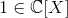 ca element neutru, adică  oricare ar fi
oricare ar fi
Distributivitatea înmulțirii față de adunare
Înmulțirea este distributivă în raport cu adunarea polinoamelor, adică oricare ar fi și oricare ar fi
Propoziția P17:
Folosind proprietățile adunării și înmulțirii polinoamelor se pot demonstra egalitățile:
unde reprezintă binomul lui Newton.
Definiția P18: Înmulțirea cu scalari a polinoamelor
Fie un scalar și polinomul .
Produsul dintre scalarul  și polinomul este polinomul
și polinomul este polinomul
A înmulți un polinom cu un saclar, înseamnă a-i înmulți toate componentele cu acel scalar.
Operația prin care asociem fiecărui cuplu polinomul se numește înmulțirea cu scalari a polinoamelor.
Așadar, putem defini următoarea funcție:
Propoziția P19: Proprietăți ale înmulțirii polinoamelor cu scalari
 oricare ar fi și pentru orice
oricare ar fi și pentru orice
pentru orice 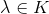 și oricare ar fi
oricare ar fi și pentru orice
cu și pentru orice
Exemple:
Fie polinoamele și
Calculați
Calculați
Verificați dacă polinomul constant este element neutru pentru polinomul
Calculați și
Calculați și
Rezolvare:
Pentru a rezolva aceste exercițiu, vom folosi Propoziția P16: Proprietățile înmulțirii polinoamelor.
Calculăm
Conform Propoziției P16,1., avem că înmulțirea polinoamelor este comutativă.
Calculăm
![\begin{align*} &(f_1\cdot f_2)\cdot f_3=\\\\&=\big[(-X^2+X+1)\cdot(X+2)\big]\cdot(X-2)\\\\ &\overset{a.}{=}(-X^3-X^2+3X+2)\cdot(X-2)\\\\ &=(-X^3)\cdot X+(-X^3)\cdot(-2)-X^2\cdot X-X^2\cdot(-2)+3X\cdot X+3X\cdot(-2)+2\cdot X+2\cdot(-2)\\\\ &=-X^4+2X^3-X^3+2X^2+3X^2-6X+2X-4\\\\ &=-X^4+(2-1)X^3+(2+3)X^2+(-6+2)X-4\\\\ &=-X^4+X^3+5X^2-4X-4 \end{align*}](../media/webbooks/338/2153/images/equations/gzyykrdcvko7iw-r4h76fa==.svg)
Conform Propoziției P16,2., avem că înmulțirea polinoamelor este asociativă.
Verificăm dacă polinomul constant este element neutru pentru polinomul
Adică verificăm relația
Calculăm
Conform Propoziției P16,3., avem că înmulțirea polinoamelor admite polinomul constant ca element neutru.
Calculăm și

Conform Propoziției P16,4., avem că înmulțirea polinoamelor este distributivă în raport cu adunarea polinoamelor.
Calculăm și
Conform Propoziției P16,4., avem că înmulțirea polinoamelor este distributivă în raport cu adunarea polinoamelor.
Fie polinoamele și scalarii Calculați:
Rezolvare:
Pentru a rezolva aceste exercițiu vom folosi Propoziția P19: Proprietăți ale înmulțirii polinoamelor cu scalari:
Calculăm 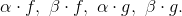
Calculăm
Calculăm
Calculăm
Calculăm
Împărțirea polinoamelor
O altă operație care se poate aplica polinoamelor este împărțirea polinoamelor, care presupune aplicarea algoritmului pentru aflarea câtului și a restului.
Fie unde  și două polinoame.
și două polinoame.
Pentru a studia împărțirea polinoamelor, în cele ce urmează vom prezenta următoarele teoreme:
Teorema împărțirii cu rest
Teorema P20: Teorema împărțirii cu rest a polinoamelor
Oricare ar fi polinoamele cu , există și sunt unice polinoamele care îndeplinesc următoarele condiții:
Polinomul se numește polinomul deîmpărțit, este polinomul împărțitor, polinomul  reprezintă câtul, iar polinomul se numește restul împărțirii polinomului la polinomul .
reprezintă câtul, iar polinomul se numește restul împărțirii polinomului la polinomul .
Definiția P21: Divizibilitatea polinoamelor
Dacă în relația (din Teorema P17: Teorema împărțirii cu rest), adică dacă atunci spunem că polinomul se divide prin polinomul (sau că este multiplu de polinomul ) sau divide polinomul (sau că este divizor al polinomului ).
Dacă se divide prin , atunci scriem (citim: se divide prin ) sau (citim: divide ).
Teorema împărțirii cu rest ne oferă un algoritm concret de determinare a câtului și a restului împărțirii a două polinoame.
Algoritmul împărțirii polinomului la polinomul presupune următoarele:
Se scriu cele două polinoame ordonate după puterile descrescătoare ale lui  (în cazul în care polinoamele sunt date după puterile crescătoare ale lui ).
(în cazul în care polinoamele sunt date după puterile crescătoare ale lui ).
Se dispun polinoamele așa cum este ilustrat în figura de mai jos:

Se împarte primul termen al lui la primul termen al lui și avem  Acest termen se pune în schemă sub împărțitor.
Acest termen se pune în schemă sub împărțitor.
Se înmulțește rezultatul astfel obținut cu împărțitorul și se scade acest produs din deîmpărțitorul (adică, se adună acest produs cu semn schimbat la ) și se obține polinomul

Polinomul are gradul cel mult 
Dacă atunci se repetă pasul  cu în locul lui
cu în locul lui 
Fie
Se obține: unde și
Dacă atunci pentru și se aplică pasul Avem atunci unde și
După un număr finit de pași se obține numărul
Algoritmul se termină când gradul restului (pentru ) este strict mai mic decât gradul împărțitorului.
Din egalitățile de mai sus ne rezultă că:
Prin adunarea lor, membru cu membru, obținem:
Punem respectiv și atunci avem cu
Exemple:
Să se împartă polinomul la polinomul folosind algoritmul împărțirii lui  la
la 
Rezolvare:
Conform algoritmului avem următorii pași:
- Cum polinoamele sunt ordonate după puterile descrescătoare ale lui trecem la următorul pas.
- Se dispun polinoamele astfel:

- Se împarte primul termen al lui la primul termen al lui și avem Acest termen se pune în schemă sub împărțitor.
Se înmulțește rezultatul astfel obținut cu împărțitorul și se scade acest produs din deîmpărțitorul (adică, se adună acest produs cu semn schimbat la ) și se obține polinomul

- Se împarte primul termen al lui la primul termen al lui și avem
Se înmulțește rezultatul astfel obținut cu împărțitorul și se scade acest produs din deîmpărțitorul și se obține polinomul

- Se împarte primul termen al lui la primul termen al lui și avem
Se înmulțește rezultatul astfel obținut cu împărțitorul și se scade acest produs din deîmpărțitorul și se obține polinomul

Am găsit câtul și restul
Să se determine câtul și restul împărțirii polinomului la polinomul , folosind algoritmul împărțirii lui la
Rezolvare:

Am găsit câtul și restul
Teorema restului
Teorema P22: Teorema restului
Restul împărțirii polinomului prin polinomul este egal cu valoarea numerică a polinomului pentru adică
Din Teorema P18: Teorema restului se obține cunoscuta teoremă a lui Bézout (sau teorema factorului), care stabilește legătura între divizorii de gradul întâi ai polinomului și rădăcinile acestui polinom.
Teorema P23: Teorema factorului (sau teorema lui Bézout)
Un element 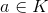, unde este rădăcină a polinomului dacă și numai dacă divide pe
Cu alte cuvinte
Pentru a afla câtul și restul împărțirii unui polinom prin binomul se poate folosi și schema lui Horner.
Schema lui Horner ne ajută să aflăm câtul al împărțirii polinomului la polinomul precum și restul acestei împărțiri
Schema lui Horner arată astfel:

Algoritmul acestei scheme este următorul:
Din relația 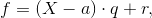 prin identificare, rezultă egalitățile:
Coeficientul dominant al câtului, coincide cu coeficientul dominant al deîmpărțitului, 
Formula ne spune că dacă am aflat coeficientul al lui din cât, atunci coeficientul lui tot din cât, se obține înmulțind pe  cu
cu  și rezultatul se adună cu (coeficientul lui din deîmpărțit).
și rezultatul se adună cu (coeficientul lui din deîmpărțit).
Se trec puterile lui de la împărțit în ordine descrescătoare (inclusiv puterile care lipsesc - acestea au coeficienții egali cu zero).
Sub fiecare putere a lui se trece coeficientul cu care apare în scrierea lui
Pe linia următoare se coboară coeficientul dominant (  care este primul coeficient al câtului). Pe această linie, în fața lui
care este primul coeficient al câtului). Pe această linie, în fața lui  se scrie termenul din binomul 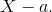 Această linie se completează cu ceilalți coeficienți ai câtului după relațiile: etc.
se scrie termenul din binomul 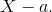 Această linie se completează cu ceilalți coeficienți ai câtului după relațiile: etc.
Sub coeficienții se scriu puterile lui pentru a scrie mai ușor polinomul 
Exemple:
Luăm exemplele de mai sus și le rezolvăm folosind schema lui Horner. Se va observa că rezultatele vor fi identice.
Să se determine câtul și restul împărțirii polinomului la polinomul , folosind schema lui Horner.
Rezolvare:
Schema lui Horner pentru polinoamele date este:

Am găsit câtul și restul
Să se împartă polinomul la polinomul folosind schema lui Horner.
Rezolvare:
În acest caz, teorema împărțirii cu rest este sau împărțind la  avem:
avem:
Așadar, pentru polinoamele și aplicăm schema lui Horner astfel:

Am găsit câtul și restul de unde ne rezultă că
Divizibilitatea polinoamelor
Fie și două polinoame.
Am văzut în subcapitolul anterior că dacă ![f,g\in \mathbb{C}[X], \ g\neq0,](../media/webbooks/338/2153/images/equations/1ojsyr1-m2pm0ngag_gawg==.gif) atunci se divide prin dacă există , unde astfel încât (se mai spune că este multiplu de sau că este divizor al lui ).
atunci se divide prin dacă există , unde astfel încât (se mai spune că este multiplu de sau că este divizor al lui ).
Definiția P24: Divizibilitatea polinoamelor
Spunem că polinomul se divide prin polinomul dacă și numai dacă (acesta devine un criteriu prin care probăm că polinomul se divide prin - se face împărțirea celor două polinoame și se constată că restul împărțirii este polinomul nul).
În cazul particular când spunem că se divide prin dacă și numai dacă (Bézout).
Exemplu:
Să se verifice dacă polinomul se divide cu polinomul Determinați câtul împărțirii lui la .
Rezolvare:
Aplicăm schema lui Horner:
| 2 | 1 | -3 | 0 | -4 | 4 | |
| 2 |  |
Am obținut că , polinomul
Câtul acestei împărțiri este
Verificare: aplicăm algoritmul împărțirii polinomului la polinomul descris în subcapitolul anterior.

Cum restul împărțirii polinomului la polinomul este , ne rezultă că se divide prin .
Pentru polinoamele numerice definim următoarea teoremă:
Teorema P25: Condiții de existență a divizibilității
Fie polinoamele definite mai sus.
Polinomul este divizibil prin polinomul dacă și numai dacă orice rădăcină a polinomului este rădăcină și a polinomului având și pentru acesta un ordin de multiplicitate cel puțin egal cu cel pe care îl are pentru polinomul
Propoziția P26: Proprietăți ale relației de divizibilitate
Relația de divizibilitate pe mulțimea este:
reflexivă:
tranzitivă: dacă și atunci
Alte proprietăți:
Polinomul nul este divizibil cu oricare polinom deoarece Se spune că este cel mai mare element în raport cu divizibilitatea pe .
Polinoamele constante sunt divizori pentru orice polinom din .
Dacă astfel încât și oricare ar fi
Fie și Atunci 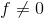 și 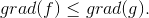 Un divizor al unui polinom nenul este un polinom nenul de grad cel mult egal cu al polinomului.
Fie și Atunci și
Fie . Atunci dacă și numai dacă
Definiția P27: Asocierea în divizibilitate
Spunem că polinoamele sunt asociate în divizibilitate, dacă și (se divid reciproc) și scriem
Polinoamele nenule ![f,g\in K[X]](../media/webbooks/338/2153/images/equations/pdmctxqaugyxf6cmnhs8ow==.gif) sunt asociate în divizibilitate dacă și numai dacă există astfel încât
sunt asociate în divizibilitate dacă și numai dacă există astfel încât
Exemple:
Polinoamele și sunt asociate în divizibilitate, deoarece
Polinoamele și sunt asociate în divizibilitate, deoarece
Definiția P28: Divizori improprii
Divizorii de forma și cu se numesc divizori improprii ai lui Ceilalți divizori ai lui dacă există, se numesc divizori proprii.
Definiția P29: Cel mai mare divizor comun (c.m.m.d.c.)
Fie polinoamele definite la începutul acestui subcapitol.
Spunem că polinomul este un cel mai mare divizor comun al polinoamelor (c.m.m.d.c.) al polinoamelor și dacă:
 este divizor comun pentru și , adică și
este divizor comun pentru și , adică și
orice alt divizor comun pentru și îl divide pe , adică pentru orice care îndeplinește condițiile , de unde avem că
C.m.m.d.c. al polinoamelor și va fi notat cu 
Teorema P30: Existența și
Fie două polinoame nenule și restul împărțirii lui la Dacă există și atunci
Exemplu:
Fie polinoamele și Să se determine c.m.m.d.c. al polinoamelor date.
Rezolvare:
Îl împărțim pe la  și obținem:
și obținem:

Am găsit că restul împărțirii este iar câtul este
Atunci, conform Teoremei P20: Teorema împărțirii cu rest a polinoamelor avem că .
Conform Teoremei P30: Existența și , ne rezultă că .
Așadar, problema s-a redus la a calcula c.m.m.d.c. .
Avem:
Se obține că c.m.m.d.c. al polinoamelor date este:
Pentru verificare, se împarte fiecare polinom cu c.m.m.d.c.-ul găsit. În urma împărțirii trebuie sa ne reiasă că restul este nul, adică c.m.m.d.c.-ul găsit este divizor comun pentru cele două polinoame date.


Am obținut că c.m.m.d.c.-ul găsit este divizor comun pentru cele două polinoame date.
Definiția P31: Polinoame prime între ele
Fie . Spunem că polinoamele și sunt prime între ele (sau relativ prime) dacă adică 
Definiția P32: Cel mai mic multiplu comun (c.m.m.m.c.)
Fie polinoamele definite la începutul acestui subcapitol.
Spunem că polinomul este un cel mai mic multiplu comun al polinoamelor (c.m.m.m.c.) al polinoamelor și dacă:
 este multiplu pentru polinoamele și , adică și
este multiplu pentru polinoamele și , adică și
orice alt multiplu comun pentru și îl divide pe , adică pentru orice care îndeplinește condițiile , de unde ne rezultă că 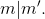
C.m.m.m.c. al polinoamelor și va fi notat cu
Pentru determinarea ![[f,g]](../media/webbooks/338/2153/images/equations/nfy4la465pneybgj8bl9cq==.gif) se folosește relația:
se folosește relația:
Exemplu:
Fie polinoamele și Să se determine c.m.m.m.c. al polinoamelor date.
Rezolvare:
Folosim relația: De la exemplul de la c.m.m.d.c. avem că
Atunci, putem scrie că:

Atunci c.m.m.m.c. este ![\begin{align*} [f,g]&=2X^5-6X^3+4X. \end{align*}](../media/webbooks/338/2153/images/equations/gba1cuvpntcy4garvxwlow==.gif)
Observație!
Se poate defini c.m.m.d.c. și c.m.m.m.c. pentru trei, patru sau mai multe polinoame.
Astfel: și etc...
Rădăcinile unui polinom. Ecuații algebrice
RĂDĂCINILE UNUI POLINOM
Fie ![f\in K[X]](../media/webbooks/338/2153/images/equations/zk2stqsavyr2wwk7aygfow==.gif) , un polinom nenul.
, un polinom nenul.
Definiția P33: Rădăcina unui polinom
Elementul se numește rădăcină a polinomului dacă
Exemple:
Polinomul de gradul are rădăcina reprezentată de numărul complex
Pentru polinomul de gradul rădăcinile sunt date de formulele dacă respectiv dacă
Următoarea teoremă pune în evidență o legătură între rădăcinile unui polinom și divizibilitatea polinoamelor pe mulțimea 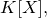 unde 
Teorema P34: Bézout
Fie și Atunci:
 este rădăcină a polinomul dacă și numai dacă polinomul se divide cu polinomul Se notează
este rădăcină a polinomul dacă și numai dacă polinomul se divide cu polinomul Se notează
dacă polinomul se divide cu polinomul nenul și este rădăcină a lui rezultă că este rădăcină și a polinomului .
Exemplu:
Fie polinoamele și Să se determine 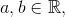 pentru care polinomul se divide cu Să se afle apoi rădăcinile lui
Rezolvare:
Rădăcinile polinomului sunt date de ecuația
Obținem:
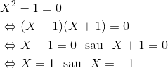
Se impun condițiile  și .
și .
Ne rezultă sistemul, pe care îl rezolvăm folosind noțiunile din ghidul Sisteme de ecuații liniare:
Adunând cele două ecuații ale sistemului de mai sus, ne rezultă că:
Înlocuind în prima ecuație vom avea că:
Atunci, polinomul este de forma
Polinom se poate scrie și astfel:
Atunci, rădăcinile polinomului se află egalând expresia de mai sus cu zero:
Atunci avem că:
Cum ecuația nu are soluții reale, ne rezultă că rădăcinile polinomului pentru  și sunt respectiv
și sunt respectiv 
Definiția P35: Rădăcină multiplă
Fie un polinom nenul și Elementul se numește rădăcină multiplă de ordin dacă polinomul se divide cu dar nu se divide cu
Numărul se numește ordin de multiplicitate al rădăcinii .
Dacă rădăcina se numește rădăcină simplă. Dacă rădăcina se numește rădăcină dublă, triplă, ... .
Așadar, dacă este rădăcină multiplă de ordinul polinomul se poate scrie sub forma unde și
Observații:
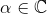 este rădăcină dublă pentru polinomul ![f \in\mathbb{C}\left [ X \right ],](../media/webbooks/338/2153/images/equations/rbwlkomygkdmpx3zj7zwrq==.gif) dacă , adică este rădăcină pentru
dacă , adică este rădăcină pentru  pentru și nu este rădăcină pentru
pentru și nu este rădăcină pentru
este rădăcină triplă pentru polinomul dacă , adică este rădăcină pentru pentru , pentru și nu este rădăcină pentru
polinomul care are o infinitate de rădăcini este polinomul nul.
Exemplu:
Fie polinomul Să se determine știind că  este rădăcină dublă pentru polinomul dat.
este rădăcină dublă pentru polinomul dat.
Rezolvare:
Soluția 1 (metoda coeficienților nedeterminați):
Deoarece este rădăcină dublă, polinomul se divide cu
Avem:
Folosind egalitatea polinoamelor (Definiția P12: egalitatea a două polinoame) ne rezultă că:
Am găsit că și . Avem că .
Rădăcinile lui le aflăm, rezolvând ecuația:
Soluția 2 (folosind schema lui Horner):
Dacă este rădăcină dublă a polinomul , atunci se divide cu
Efectuăm prin schema lui Horner împărțirea polinomului cu  și a câtului rezultat cu Avem:
și a câtului rezultat cu Avem:
| 1 | 3 | |  | |
| 1 |  | ||
| 1 |
Am obținut resturile și 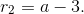
Punând condițiile , obținem:
Am găsit că și .
ECUAȚII ALGEBRICE
Fie  un corp comutativ și un polinom de gradul
un corp comutativ și un polinom de gradul
Definiția P36: Ecuație algebrică
O ecuație de forma  se numește ecuație algebrică de gradul
se numește ecuație algebrică de gradul  cu coeficienții în și necunoscuta
cu coeficienții în și necunoscuta
Dacă ecuația algebrică de gradul are forma
Numerele  se numesc coeficienții ecuației, iar se numește gradul ecuației.
se numesc coeficienții ecuației, iar se numește gradul ecuației.
Elementul cu proprietatea că se numește soluție a ecuației.
Teorema P37: Teorema fundamentală a algebrei
O ecuație algebrică de grad cel puțin  cu coeficienți complecși admite cel puțin o soluție complexă.
cu coeficienți complecși admite cel puțin o soluție complexă.
Această teoremă mai este cunoscută în literatura ca fiind Teorema D'Alembert-Gauss.
Teorema P38: Abel-Ruffini
Fie o ecuație algebrică de grad cu coeficienți în  Atunci nu există o formulă generală de rezolvare a acestei ecuații în care să apară numai coeficienții
Atunci nu există o formulă generală de rezolvare a acestei ecuații în care să apară numai coeficienții
Observații!
Din Teorema P37: (Teorema fundamentală a algebrei) rezultă că o ecuație algebrică de gradul  cu coeficienți complecși are exact soluții complexe, nu neapărat distincte.
cu coeficienți complecși are exact soluții complexe, nu neapărat distincte.
Deoarece polinomul de gradul , are exact rădăcini complexe, rezultă că el nu poate lua valoarea zero decât de ori. Astfel, dacă polinomul se anulează de mai mult de ori, atunci el este polinom nul.
Exemplu:
Fie polinomul cu proprietatea că  Să se arate că este polinom constant.
Să se arate că este polinom constant.
Rezolvare:
Pentru se obține că:
Notăm valoarea comună și fie
Atunci, avem că:
deci polinomul are o infinitate de rădăcini.
Rezultă că el este polinom nul și astfel